วงจรคอมไบเนชัน ของฟังก์ชันต่าง ๆ
🎯 จุดประสงค์ของบทเรียน
- สามารถแยกแยะระหว่างวงจร half-adder กับวงจร full-adder ได้
- สามารถใช้วงจร full-adder เพื่อสร้างวงจรการบวกหลายบิตแบบขนานได้
- รู้จักวงจร comparator แบบต่าง ๆ
- สามารถสร้างวงจร binary decoder พื้นฐานได้
- รู้จักการใช้งาน BCD-to-7-segment decoder ที่ใช้สำหรับการแสดงผลตัวเลข
- รู้จักการประยุกต์ใช้วงจร decimal-to-BCD priority encoder สำหรับการใช้กับแป้นพิมพ์แบบง่าย ๆ
- สามารถสร้างวงจรเพื่อการแปลงค่าไบนารีให้เป็น Gray code และแปลง Gray code ให้เป็นค่าไบนารีได้
- รู้จักกับ multiplexer และ demultiplexer
🧭 ความเชื่อมโยงกับ มคอ.3
CLO3 อธิบายการวิเคราะห์และออกแบบวงจรพื้นฐานสำหรับการสร้างวงจรองค์ประกอบของระบบคอมพิวเตอร์
CLO5 อธิบายการทำงานของวงจรตรรกะพื้นฐานทั้งแบบวงจรผสมและวงจรเชิงลำดับในการนำไปใช้เป็นองค์ประกอบของระบบคอมพิวเตอร์
กิจกรรม: บรรยาย / PBL · ปฏิบัติการ: วงจรบวกและวงจรถอดรหัส (สัปดาห์ที่ 9) · multiplexer และ 7-segment (สัปดาห์ที่ 10)
การประเมิน: แบบฝึกหัดและรายงานผลการทดลอง (20%) · สอบปลายภาค (30%) · ข้อเสนอโครงงานกลุ่ม (สัปดาห์ที่ 9)
7.1 วงจร Adder พื้นฐาน
วงจร adder หรือวงจรบวก เป็นวงจรที่สำคัญสำหรับคอมพิวเตอร์และระบบดิจิทัลชนิดอื่นอีกมากมายที่ต้องการความสามารถในการประมวลผลเชิงตัวเลข ดังนั้นการทำความเข้าใจเรื่องของ adder นั้นนับเป็นเรื่องสำคัญที่นักศึกษาควรรู้อย่างยิ่ง ดังนั้นในบทนี้จะขอเริ่มด้วยเรื่องของ adder พื้นฐานต่าง ๆ
7.1.1 วงจร Half-adder
นิยามของวงจรลอจิกสำหรับการปฏิบัติการบวกที่เราเรียกว่า half-adder นั้นเป็นดังต่อไปนี้
วงจร half-adder จะเป็นวงจรที่รับอินพุตที่เป็นค่าไบนารีจำนวน 2 อินพุต และจะสร้างเอาต์พุตที่เป็นค่าไบนารีจำนวน 2 เอาต์พุต เรียกว่า sum กับ carry
วงจร half-adder มีสัญลักษณ์ลอจิกดังรูปที่ 7.1
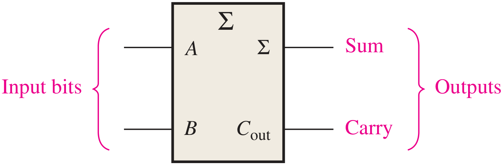
ลอจิกของวงจร half-adder ตารางที่ 7.1 เป็นตารางค่าความจริงที่แสดงปฏิบัติการของวงจร half-adder ซึ่งจะทำให้หานิพจน์ของเอาต์พุต sum และนิพจน์ของเอาต์พุต carry จากสิ่งที่พิจารณาได้ดังต่อไปนี้
| A | B | Cout | Σ |
|---|---|---|---|
| 0 | 0 | 0 | 0 |
| 0 | 1 | 0 | 1 |
| 1 | 0 | 0 | 1 |
| 1 | 1 | 1 | 0 |
สำหรับ Σ นั้น เอาต์พุตเป็น 1 เมื่ออินพุต A กับ B มีค่าตรงข้ามกัน ซึ่งปฏิบัติการนี้ก็คือปฏิบัติการ XOR นั่นเอง ดังนั้นเราสามารถเขียนนิพจน์ได้เป็น
ส่วน Cout นั้นเมื่อพิจารณาดูจะเห็นว่าจะมีค่าเป็น 1 เฉพาะกรณีที่ A และ B เป็น 1 ทั้งคู่ ซึ่งก็คือปฏิบัติการ AND นั่นเอง ดังนั้นเราสามารถเขียนนิพจน์ได้เป็น
จากสมการที่ 7.1 และ 7.2 นั้นเราจะสามารถนำมาสร้างเป็นวงจรได้ดังรูปที่ 7.2
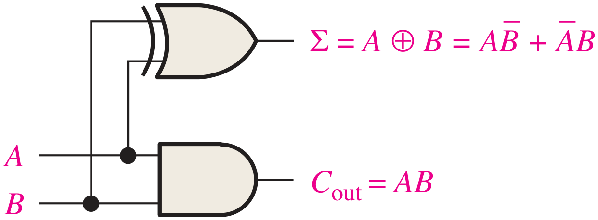
7.1.2 วงจร Full-adder
วงจร full-adder นั้นมีนิยามดังต่อไปนี้
วงจร full-adder จะเป็นวงจรที่รับอินพุตที่เป็นค่าไบนารีจำนวน 2 อินพุต และอีกอินพุตหนึ่งจะเป็นอินพุตตัวทด (input carry) ซึ่งจะทำการสร้างเอาต์พุตเป็น sum และ output carry
ความแตกต่างระหว่าง full-adder กับ half-adder ก็คือ full-adder จะมี input carry สำหรับสัญลักษณ์ลอจิกจะแสดงในรูปที่ 7.3 ส่วนตารางค่าความจริงสำหรับการปฏิบัติการของ full-adder จะแสดงไว้ในตารางที่ 7.2
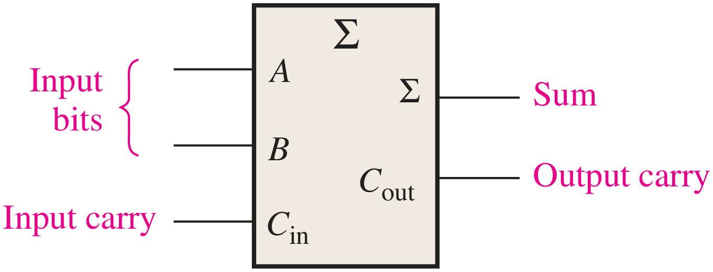
| A | B | Cin | Cout | Σ |
|---|---|---|---|---|
| 0 | 0 | 0 | 0 | 0 |
| 0 | 0 | 1 | 0 | 1 |
| 0 | 1 | 0 | 0 | 1 |
| 0 | 1 | 1 | 1 | 0 |
| 1 | 0 | 0 | 0 | 1 |
| 1 | 0 | 1 | 1 | 0 |
| 1 | 1 | 0 | 1 | 0 |
| 1 | 1 | 1 | 1 | 1 |
ลอจิกของวงจร full-adder เนื่องจากวงจร full-adder นั้นเป็นการบวกกันระหว่างอินพุต 2 บิต ผนวกกับ input carry ซึ่งจากที่เราได้เรียนรู้ half-adder มานั้น ผลของ sum ที่ได้จากบิตอินพุต A กับ B คือการ XOR กันของตัวแปรทั้งสอง (A ⊕ B) สำหรับ input carry (Cin) ที่จะถูกผนวกเข้าไปเป็นอินพุตอีกบิตหนึ่งนั้นก็จะต้องใช้การ XOR เข้ากับ A ⊕ B ซึ่งจะทำให้ได้สมการสำหรับเอาต์พุต sum ของวงจร full-adder ดังนี้
ซึ่งการสร้างวงจร full-adder ในส่วนของการ sum นั้น เราจะต้องใช้ XOR gate จำนวน 2 ตัว โดยที่ตัวแรกจะทำการสร้างผลลัพธ์ของพจน์ A ⊕ B และตัวที่สองนั้นจะนำเอาเอาต์พุตจากพจน์แรกมาเป็นอินพุตเพื่อปฏิบัติการ XOR ร่วมกับ input carry ดังที่เห็นในรูปที่ 7.4
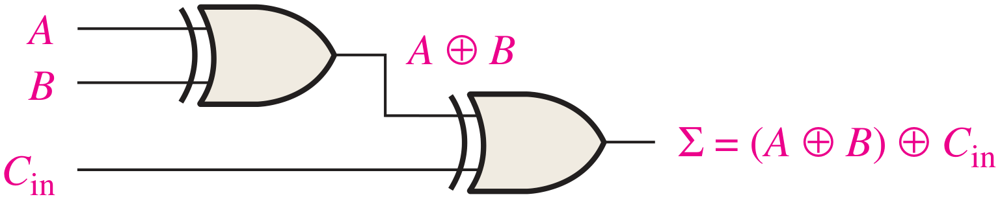
สำหรับ output carry (Cout) นั้นจะมีค่าเท่ากับ 1 เมื่ออินพุตของ XOR gate ตัวแรกมีค่าเป็น 1 ทั้งคู่ หรือเมื่ออินพุตทั้งสองที่เข้ามายัง XOR gate ตัวที่สองมีค่าเท่ากับ 1 พิจารณาข้อเท็จจริงที่กล่าวนี้ได้จากตารางค่าความจริงของวงจร full-adder ที่ปรากฏอยู่ในตารางที่ 7.2 เราจะได้ว่า output carry ของวงจร full-adder นั้นจะสร้างจากการนำอินพุต A มา AND เข้ากับ B และนำ A ⊕ B มา AND กับ Cin แล้วจับเอาทั้งสองพจน์นี้มา OR กัน ดังที่ปรากฏในสมการที่ 7.4 ดังนั้นวงจรเต็มของ full-adder จะได้ดังรูปที่ 7.5
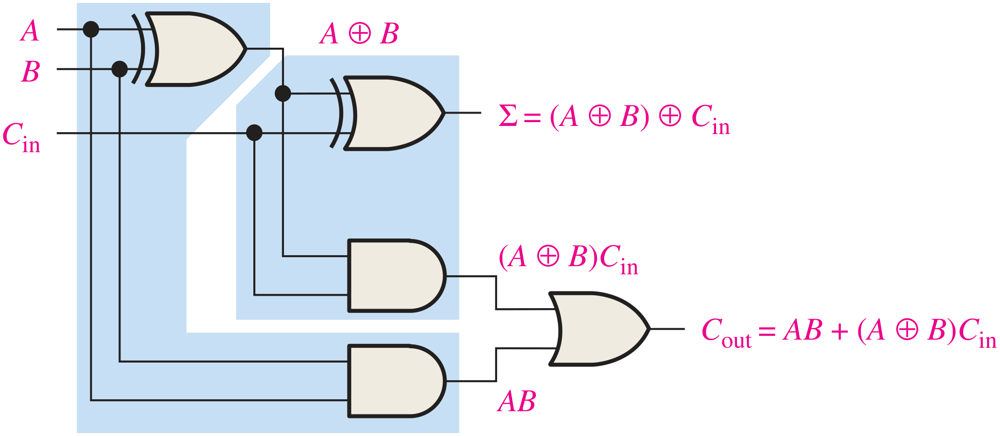
จากรูปที่ได้ระบายพื้นเข้มเอาไว้ 2 ส่วนนั้นคือส่วนที่มีรูปแบบวงจรแบบ half-adder ดังนั้นเราอาจเขียนวงจร full-adder ด้วยการใช้ block diagram ของ half-adder มาแทนที่ส่วนพื้นที่เข้มในวงจร ดังนั้นเราจะได้ดังรูปที่ 7.6 (ก) สำหรับสัญลักษณ์ลอจิกของ full-adder สามารถเขียนได้ดังรูปที่ 7.6 (ข)
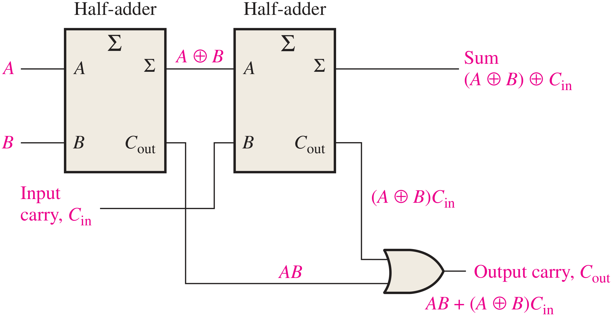
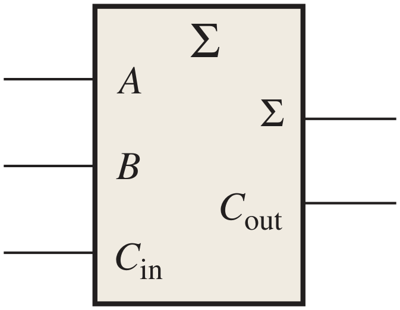
ของ full-adder
จงหาเอาต์พุตของ full-adder ที่ได้จากชุดอินพุตที่กำหนดให้
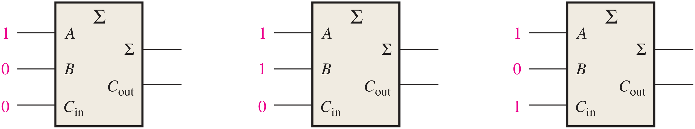
แสดงวิธีทำ
(ก)บิตอินพุต A=1 B=0 และ Cin=0 จะได้ว่า 1+0+0=1 โดยไม่มีตัวทด ดังนั้นจะได้ Σ = 1 และ Cout = 0
(ข)บิตอินพุต A=1 B=1 และ Cin=0 จะได้ว่า 1+1+0=0 และมีตัวทด ดังนั้นจะได้ Σ = 0 และ Cout = 1
(ค)บิตอินพุต A=1 B=0 และ Cin=1 จะได้ว่า 1+0+1=0 และมีตัวทด ดังนั้นจะได้ Σ = 0 และ Cout = 1
7.2 วงจร Binary Adder แบบขนาน (Parallel Binary Adder)
Full-adder หนึ่งตัวนั้นจะสามารถบวกเลขขนาด 1 บิตที่มีบิตตัวทดขาเข้า (input carry) ได้ ทั้งนี้เมื่อเราต้องการบวกเลขที่มากกว่า 1 บิตนั้น สามารถทำได้โดยการนำ full-adder หลาย ๆ ตัวมาต่อขนานกันตามความต้องการ เราเรียกว่า parallel binary adder ซึ่งเมื่อเลขไบนารีแต่ละชุดถูกบวกเข้าด้วยกัน full-adder ในแต่ละชุดจะสร้างผลลัพธ์ออกเป็นบิต sum ที่ได้ผลเป็น 1 หรือ 0 และบิต output carry (Cout) ที่จะส่งทอดไปต่อเข้ากับ input carry (Cin) ที่อยู่ถัดไปทางด้านซ้ายมืออันเป็นบิตที่มีนัยสำคัญที่สูงกว่า ลองพิจารณาจากรูปที่ 7.7 ที่เป็น parallel binary adder แบบ 2 บิต
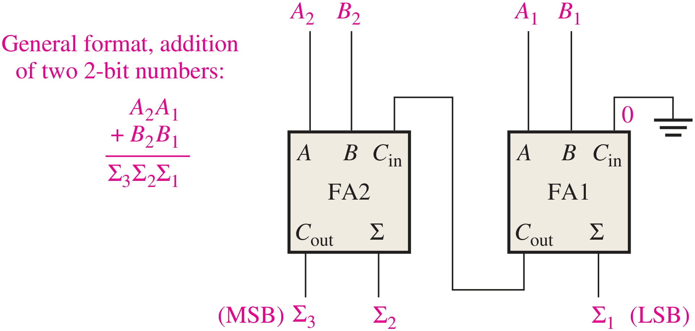
จากรูปที่ 7.7 บิตที่เป็น LSB นั้นมีขาอินพุตที่มีชื่อ A1 และ B1 ส่วนในบิตที่มีนัยสำคัญที่สูงกว่าจะมีชื่อว่า A2 และ B2 โดยมีบิต sum ที่ระบุชื่อว่า Σ1 Σ2 และ Σ3 จะสังเกตเห็นว่าในบิต MSB นั้นเราจะให้ output carry เป็น Σ3 โดยปริยาย
จงหาผลลัพธ์ของ parallel binary adder แบบ 3 บิตที่เห็นในรูป เมื่อนำตัวเลข 101 กับ 011 ป้อนเข้าที่อินพุต
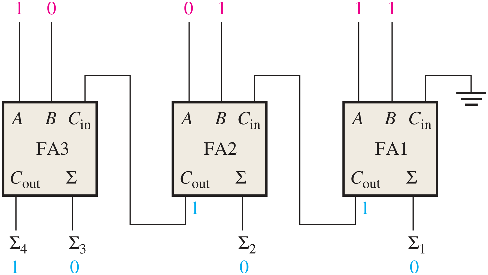
แสดงวิธีทำ
จากรูปเราเริ่มบวกเลขไบนารีของบิต LSB ก่อน ซึ่งจะมี A=1 และ B=1 โดยมี Cin=0 ทำให้ได้ Σ1=0 และได้ Cout=1 ที่จะเป็นค่าที่ทดไปยัง Cin ของ full-adder ตัวถัดไป (นัยสำคัญสูงขึ้น) และการบวกก็จะดำเนินไปอย่างนี้เรื่อย ๆ และจะได้ผลลัพธ์สุดท้ายเป็น 1000 ซึ่งถูกต้องตามการบวกเลขแบบไบนารี (1012 + 0112 = 10002 หรือก็คือ 5 + 3 = 8 นั่นเอง)
7.2.1 Parallel Adder ขนาด 4 บิต
กลุ่มตัวเลขขนาด 4 บิตเป็นขนาดกลุ่มตัวเลขที่มีความนิยมในการนำไปประยุกต์ใช้ (เราเรียกกลุ่ม 4 บิตว่า nibble) ดังนั้น parallel adder ขนาด 4 บิตจึงได้มีการนำไปสร้างเป็นโมดูลมาตรฐาน โดยจะมีวงจรภายในแสดงให้เห็นการต่อวงจรที่ใช้ full-adder จำนวน 4 ตัวเอาไว้ในรูปที่ 7.8 (ก) และแสดงสัญลักษณ์ลอจิกไว้ในรูปที่ 7.8 (ข)
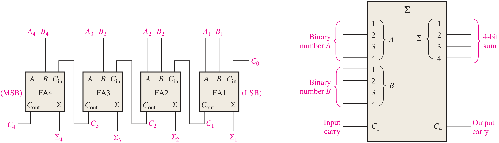
จากรูปจะเห็นว่า Cout ที่ได้จากบิตที่มีนัยสำคัญต่ำกว่า จะเชื่อมโยงไปยัง Cin ของบิตที่มีนัยสำคัญสูงขึ้น 1 ระดับ ซึ่งในรูปจะเห็นระบุเป็นชื่อ C1 C2 และ C3 ตามลำดับ เราเรียกตัวทดเหล่านี้ว่า internal carry ซึ่งจะเห็นได้จากสัญลักษณ์ลอจิกว่าสัญญาณพวกนี้จะมองจากด้านนอกไม่เห็น สำหรับจุดนี้นักศึกษาลองสังเกตและอภิปรายประเด็นของวงจรกับสัญลักษณ์ของมันเพื่อเสริมความเข้าใจ ทั้งนี้ในเรื่องของตัวทด (carry) นั้นยังมีรายละเอียดที่น่าสนใจเพื่อการต่อยอดความรู้ในเรื่องของ ripple carry adder และ look-ahead carry adder กันต่อไป
7.2.2 ตารางค่าความจริงของ Parallel Adder ขนาด 4 บิต
ตารางที่ 7.3 เป็นการแสดงตารางค่าความจริงของ parallel binary adder ขนาด 4 บิต (ถ้าอ่านจาก data sheet อาจเรียกว่า function table หรือ functional truth table ก็ได้) ตัวห้อย n จะเป็นตัวระบุลำดับที่ของบิตของตัว adder ซึ่งจะเป็น 1 2 3 และ 4 สำหรับ adder ขนาด 4 บิต ส่วน Cn−1 เป็นตัวทดที่ได้จาก adder ตัวก่อนหน้า ส่วน C1 C2 และ C3 จะเป็น internal carry ที่เกิดขึ้นภายใน C0 ใช้สำหรับเชื่อมต่อตัวทดจากด้านนอกเข้ามา และ C4 เป็น output carry สำหรับนำไปใช้ต่อ
| Cn−1 | An | Bn | Σn | Cn |
|---|---|---|---|---|
| 0 | 0 | 0 | 0 | 0 |
| 0 | 0 | 1 | 1 | 0 |
| 0 | 1 | 0 | 1 | 0 |
| 0 | 1 | 1 | 0 | 1 |
| 1 | 0 | 0 | 1 | 0 |
| 1 | 0 | 1 | 0 | 1 |
| 1 | 1 | 0 | 0 | 1 |
| 1 | 1 | 1 | 1 | 1 |
ให้ใช้ตารางค่าความจริงของ parallel adder ขนาด 4 บิตเพื่อหา sum กับ carry สำหรับการบวกเลขขนาด 4 บิต โดยกำหนดให้ input carry (Cn−1) ตั้งต้นเป็น 0 ทั้งนี้ให้
แสดงวิธีทำ
สำหรับ n=1: A1=0 B1=0 และ C0=0 จะได้ผลลัพธ์ตามแถวที่ 1 ของตาราง นั่นคือ Σ1 = 0 และ C1 = 0
สำหรับ n=2: A2=0 B2=0 และ C1=0 จะได้ผลลัพธ์ตามแถวที่ 1 ของตาราง นั่นคือ Σ2 = 0 และ C2 = 0
สำหรับ n=3: A3=1 B3=1 และ C2=0 จะได้ผลลัพธ์ตามแถวที่ 4 ของตาราง นั่นคือ Σ3 = 0 และ C3 = 1
สำหรับ n=4: A4=1 B4=1 และ C3=1 จะได้ผลลัพธ์ตามแถวที่ 8 ของตาราง นั่นคือ Σ4 = 1 และ C4 = 1
C4 เป็น output carry ที่ทำให้ผลการบวกของ 1100 เข้ากับ 1100 มีค่าเท่ากับ 11000
7.2.3 การขยายวงจรบวก
เราสามารถนำเอา parallel adder ขนาด 4 บิตจำนวน 2 ชุดมาต่อขยายให้กลายเป็นวงจรที่สามารถบวกเลขขนาด 8 บิตได้ โดยเราจะให้บิต input carry ของวงจร adder ตัวล่าง (C0) ต่อลงกราวด์ เนื่องจากจะไม่มีการทดมากระทบต่อบิตที่เป็น LSB โดยปริยาย ส่วน output carry ของวงจร adder ตัวล่างนั้นจะทำการเชื่อมไปยัง input carry ของวงจร adder ตัวบนเพื่อส่งค่าการทดออกไป เราจะเห็นว่าในรูปที่ 7.9 นั้นจะแสดงการต่อเชื่อมให้เกิด parallel adder ขนาด 8 บิต ซึ่งเราเรียกการต่อเชื่อมแบบนี้ว่าการต่อแบบ cascade
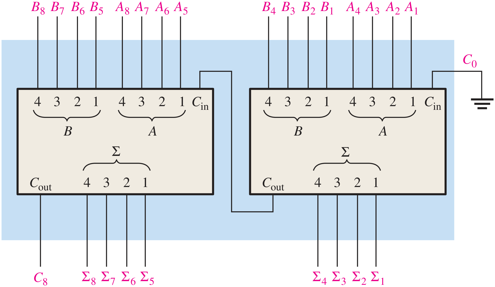
และเมื่อเราต้องการขยายความสามารถของ adder ให้มากกว่านี้ ก็สามารถนำ adder ขนาด 4 บิตหลาย ๆ ตัวมาต่อแบบ cascade ได้อีกตามที่ต้องการ เช่นในรูปที่ 7.10 ที่นำเอา adder ขนาด 4 บิตจำนวน 4 ตัวมา cascade กันเพื่อให้ได้วงจร adder ขนาด 16 บิต
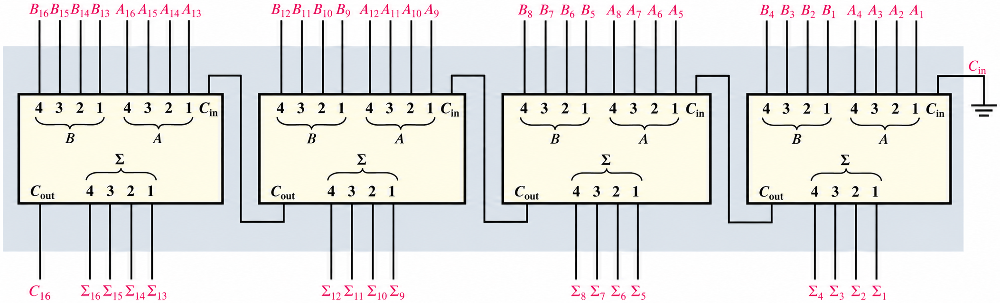
7.3 วงจรเปรียบเทียบ (Comparator)
หน้าที่พื้นฐานของวงจร comparator นั้นคือการเปรียบเทียบปริมาณของเลขไบนารี 2 จำนวนเพื่อพิจารณาความสัมพันธ์เชิงปริมาณของเลขเหล่านั้น ซึ่งรูปแบบที่ง่ายที่สุดคือการดูว่าตัวเลขชุดนั้นมีขนาดเท่ากันหรือไม่
7.3.1 วงจรตรวจสอบความเท่ากัน (Equality)
เราสามารถนำ XOR gate มาใช้เป็นวงจรเปรียบเทียบพื้นฐาน เนื่องจากเอาต์พุตจะเป็น 1 เมื่ออินพุตทั้งสองข้างไม่เท่ากัน และเอาต์พุตจะเป็น 0 เมื่ออินพุตทั้งสองข้างเท่ากัน เราเรียก XOR gate ว่าเป็นวงจร 2-bit comparator ดังที่แสดงในรูปที่ 7.11
การเปรียบเทียบเลขไบนารีขนาด 2 บิตเข้าด้วยกันนั้น จะต้องใช้ XOR gate มาเพิ่ม ยกตัวอย่างในรูปที่ 7.12 ที่จะให้เกท G1 ทำการเปรียบเทียบระหว่างบิต LSB ของตัวเลขสองตัว และให้เกท G2 มีหน้าที่ในการเปรียบเทียบ MSB ถ้าตัวเลขสองตัวนี้เท่ากันทำให้แต่ละบิตที่กล่าวมามีค่าเท่ากัน ซึ่งจะส่งผลให้เอาต์พุตที่ผ่านแต่ละ XOR gate มีค่าเป็น 0 แต่ถ้าแต่ละชุดของบิตที่ได้รับการเปรียบเทียบไม่เท่ากันแล้ว เอาต์พุตของการเปรียบเทียบชุดของบิตนั้นก็จะเป็น 1
เพื่อให้เกิดสัญญาณเอาต์พุตที่บ่งความเท่ากัน (equality) หรือความไม่เท่ากัน (inequality) ของตัวเลขสองจำนวนนั้นจะต้องพึ่งพา inverter อีก 2 ตัว กับ AND gate อีกหนึ่งตัวดังที่เห็นในรูป ซึ่งจะเห็นว่าเราจะนำเอาเอาต์พุตจาก XOR gate ทั้งสองมาทำการกลับบิตเพื่อที่จะนำไปเข้ากับ AND gate ต่อไป เมื่อสัญญาณอินพุตทั้งสองบิตในแต่ละ XOR เท่ากันก็จะได้อินพุต (หลังจากผ่าน inverter) เป็น 1 ทั้งคู่ เมื่อนำมาป้อนยัง AND gate ก็จะได้ผลลัพธ์เป็น 1 แต่ถ้าเมื่อตัวเลขสองตัวไม่เท่ากัน ไม่ว่าจะเป็นชุดใดที่นำมาเปรียบเทียบกันก็จะทำให้ได้สัญญาณเป็น 0 (หลังจากผ่าน inverter) และเมื่อขาใดขาหนึ่งหรือทั้งสองขาเป็น 0 แล้วผลลัพธ์ที่ได้จากวงจรนี้ก็จะได้ 0 เนื่องจากเป็น AND gate ที่เป็นตัวปฏิบัติการสุดท้ายที่สร้างเอาต์พุต ซึ่งความหมายของ 1 คือความเท่ากัน และ 0 คือความไม่เท่ากันของสองจำนวน ตัวอย่างที่ 7.4 แสดงให้เห็นการปฏิบัติการของกรณีเฉพาะ 2 กรณี จะเห็นว่าส่วนที่เป็น XOR กับ inverter จะถูกแทนที่ด้วย XNOR ซึ่งจะได้ผลลัพธ์ที่เทียบเท่ากัน
จงป้อนชุดตัวเลขไบนารีต่อไปนี้เข้าไปยังวงจร comparator ดังรูปข้างล่าง จงหาเอาต์พุตของวงจร
แสดงวิธีทำ
(I)
(II)
ถ้าเราต้องการที่จะขยายจำนวนบิตของ comparator จะต้องทำอย่างไร ลองอภิปรายและให้เหตุผลเพื่อประกอบความเข้าใจ
7.3.2 วงจรตรวจสอบความไม่เท่ากัน (Inequality)
เมื่อเราสามารถสร้างวงจรตรวจสอบการเท่ากันของอินพุต (A = B) ได้แล้ว เราสามารถขยายให้เป็นวงจรที่สามารถรู้ว่าอินพุต A มากกว่าอินพุต B (A > B) หรืออินพุต A น้อยกว่าอินพุต B (A < B) ในรูปที่ 7.13 จะเป็นไอซี comparator ขนาด 4 บิตที่มีขาเอาต์พุตเพิ่มมาอีก 2 ขาเพื่อระบุเอาต์พุตที่เกิดขึ้นดังที่กล่าวมา
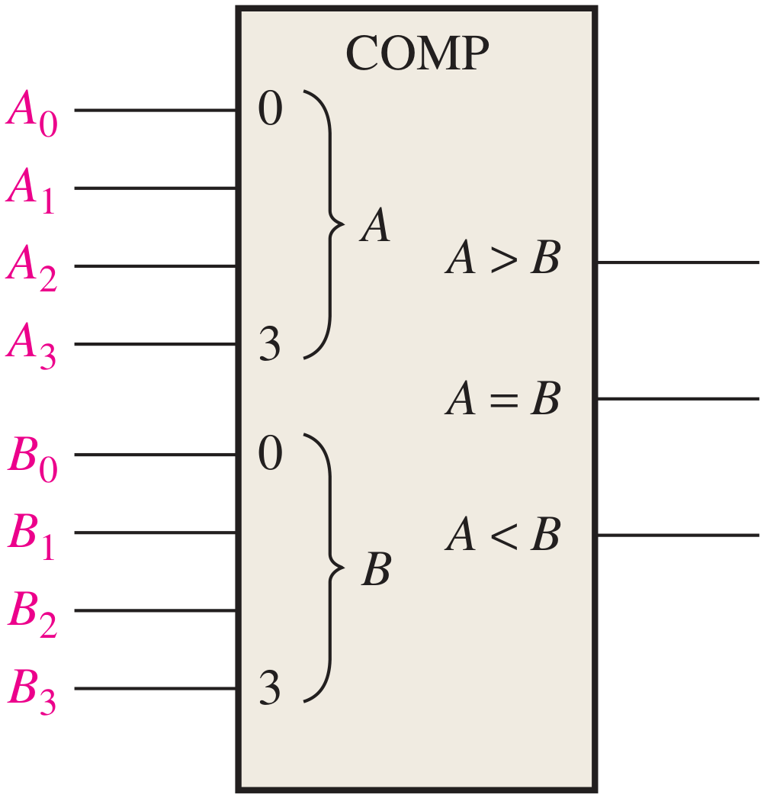
ในการหาความไม่เท่ากันของตัวเลข A กับ B นั้น เราจะพิจารณาจากบิตที่มีลำดับค่าสูงที่สุดของแต่ละตัวเลขก่อน ซึ่งกรณีที่เป็นไปได้ที่จะเกิดขึ้นก็คือ
- ถ้า A3 = 1 และ B3 = 0 จะได้ว่าตัวเลข A มากกว่า B
- ถ้า A3 = 0 และ B3 = 1 จะได้ว่าตัวเลข A น้อยกว่า B
- ถ้า A3 = B3 จะต้องตรวจสอบบิตที่มีค่าต่ำกว่าเพื่อพิจารณาความไม่เท่ากันต่อไป และจะเป็นกระบวนการทำซ้ำไปเรื่อย ๆ
7.4 วงจรถอดรหัส (Decoder)
วงจร decoder คือวงจรที่ตรวจจับรูปแบบของ combination อันใดอันหนึ่งของกลุ่มสัญญาณอินพุตที่เป็นตัวแทนของรหัสที่ต้องการ ซึ่งกลุ่มอินพุตดังกล่าวจะทำให้เกิดเอาต์พุตที่มีค่าระดับสัญญาณตามที่กำหนดไว้ โดยทั่วไปแล้ววงจร decoder จะมีอินพุตจำนวน n ขาสัญญาณ และจะมีเอาต์พุตจำนวน 2n ขาสัญญาณ
7.4.1 วงจร decoder ไบนารีพื้นฐาน
สมมติว่าถ้าเราต้องการทราบว่าเมื่อใดอินพุต (ขนาด 4 บิต) ขาเข้าจะเป็นค่าไบนารี 1001 เราสามารถใช้ AND gate เพื่อทำเป็นองค์ประกอบของการถอดรหัส เนื่องจากมันจะให้ค่าผลลัพธ์เป็น HIGH (1) ในกรณีที่สัญญาณอินพุตที่ป้อนเข้าที่ตัวมันมีค่าเป็น HIGH ทั้งหมด ดังนั้นเมื่อเราต้องการให้เกิดผลลักษณะนี้เราทำได้โดยการนำเอา inverter จำนวน 2 ตัวมากลับสองบิตตรงกลาง (1001) เพื่อให้มีค่าเท่ากับ 1 ก่อนการป้อนเข้า AND gate ก็เป็นอันว่าเราได้ส่วนประกอบการถอดรหัสที่ต้องการชุดนี้แล้ว ดูจากรูปที่ 7.14
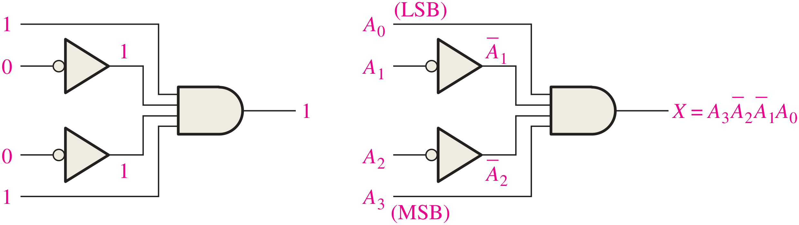
สมการลอจิกของวงจร decoder แสดงในรูปที่ 7.14 (ข) ซึ่งจะเห็นว่ากรณี combination ทั่ว ๆ ไปจะทำให้วงจรนี้มีเอาต์พุตเป็น 0 ยกเว้นกรณีเมื่อ A0=1 A1=0 A2=0 และ A3=1 เท่านั้น
ในกรณีถ้าเราใช้ NAND gate แทน AND gate ในรูปที่ 7.14 จะมีผลทำให้เอาต์พุตของการถอดรหัสมีค่าเป็น 0 เมื่ออินพุตเป็น 1001
จงสร้างวงจรลอจิกในการ decode เลขไบนารี 1011 ที่สร้างเอาต์พุตเป็นระดับสัญญาณ HIGH
แสดงวิธีทำ
ฟังก์ชันการ decode จะทำการ complement เฉพาะตัวแปรที่มีค่าอินพุตเป็น 0 ของชุดตัวเลขที่ระบุไว้ ซึ่งเราจะได้เป็น
ซึ่งเราจะสร้างวงจรได้โดยการป้อนสัญญาณที่ไม่ต้อง complement ไปยังอินพุต A3 A1 และ A0 ของ AND gate (ขนาด 4 อินพุต) โดยตรง ส่วน A2 จะต้องนำ inverter มาใช้เพื่อกลับบิต ก่อนที่จะป้อนเข้าไปที่ขาที่เหลืออีกหนึ่งขาของ AND gate ดังกล่าว วงจรนี้เป็นดังรูปข้างล่างนี้
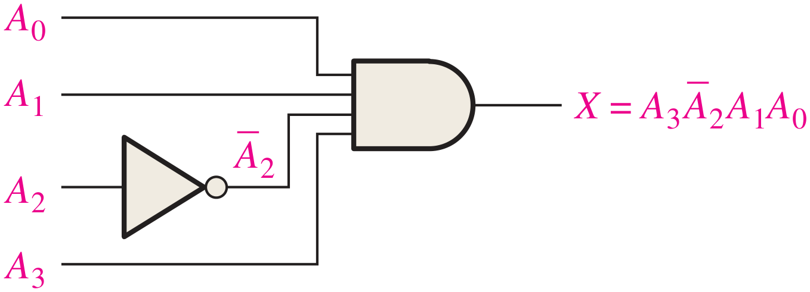
7.4.2 วงจร decoder ขนาด 4 บิต
การถอดรหัสของ combination ที่เป็นไปได้ทั้งหมดเมื่อมีอินพุตขนาด 4 บิตนั้น จะต้องมีวงจรเกทสำหรับการถอดรหัส 16 ชุด (24 = 16) ซึ่ง decoder ชนิดนี้มีชื่อเรียกสามัญว่า 4-line-to-16-line decoder เนื่องจากว่ามีอินพุต 4 อินพุต และมีเอาต์พุตจำนวน 16 ขา หรือบางครั้งมีชื่อว่า 1-of-16 decoder เนื่องจากรหัสใด ๆ ที่เกิดขึ้นที่อินพุตนั้น จะเป็นการ activate ที่เอาต์พุตขาใดขาหนึ่งใน 16 ขา รายการของรหัสไบนารีทั้ง 16 ตัวพร้อมกับ decoding function ของแต่ละรหัสของวงจร 4-line-to-16-line decoder ได้แสดงเอาไว้ในตารางที่ 7.4
| Decimal digit | Binary inputs | Decoding function | Outputs | ||||||||||||||||||
|---|---|---|---|---|---|---|---|---|---|---|---|---|---|---|---|---|---|---|---|---|---|
| A3 | A2 | A1 | A0 | 0 | 1 | 2 | 3 | 4 | 5 | 6 | 7 | 8 | 9 | 10 | 11 | 12 | 13 | 14 | 15 | ||
| 0 | 0 | 0 | 0 | 0 | A3A2A1A0 | 0 | 1 | 1 | 1 | 1 | 1 | 1 | 1 | 1 | 1 | 1 | 1 | 1 | 1 | 1 | 1 |
| 1 | 0 | 0 | 0 | 1 | A3A2A1A0 | 1 | 0 | 1 | 1 | 1 | 1 | 1 | 1 | 1 | 1 | 1 | 1 | 1 | 1 | 1 | 1 |
| 2 | 0 | 0 | 1 | 0 | A3A2A1A0 | 1 | 1 | 0 | 1 | 1 | 1 | 1 | 1 | 1 | 1 | 1 | 1 | 1 | 1 | 1 | 1 |
| 3 | 0 | 0 | 1 | 1 | A3A2A1A0 | 1 | 1 | 1 | 0 | 1 | 1 | 1 | 1 | 1 | 1 | 1 | 1 | 1 | 1 | 1 | 1 |
| 4 | 0 | 1 | 0 | 0 | A3A2A1A0 | 1 | 1 | 1 | 1 | 0 | 1 | 1 | 1 | 1 | 1 | 1 | 1 | 1 | 1 | 1 | 1 |
| 5 | 0 | 1 | 0 | 1 | A3A2A1A0 | 1 | 1 | 1 | 1 | 1 | 0 | 1 | 1 | 1 | 1 | 1 | 1 | 1 | 1 | 1 | 1 |
| 6 | 0 | 1 | 1 | 0 | A3A2A1A0 | 1 | 1 | 1 | 1 | 1 | 1 | 0 | 1 | 1 | 1 | 1 | 1 | 1 | 1 | 1 | 1 |
| 7 | 0 | 1 | 1 | 1 | A3A2A1A0 | 1 | 1 | 1 | 1 | 1 | 1 | 1 | 0 | 1 | 1 | 1 | 1 | 1 | 1 | 1 | 1 |
| 8 | 1 | 0 | 0 | 0 | A3A2A1A0 | 1 | 1 | 1 | 1 | 1 | 1 | 1 | 1 | 0 | 1 | 1 | 1 | 1 | 1 | 1 | 1 |
| 9 | 1 | 0 | 0 | 1 | A3A2A1A0 | 1 | 1 | 1 | 1 | 1 | 1 | 1 | 1 | 1 | 0 | 1 | 1 | 1 | 1 | 1 | 1 |
| 10 | 1 | 0 | 1 | 0 | A3A2A1A0 | 1 | 1 | 1 | 1 | 1 | 1 | 1 | 1 | 1 | 1 | 0 | 1 | 1 | 1 | 1 | 1 |
| 11 | 1 | 0 | 1 | 1 | A3A2A1A0 | 1 | 1 | 1 | 1 | 1 | 1 | 1 | 1 | 1 | 1 | 1 | 0 | 1 | 1 | 1 | 1 |
| 12 | 1 | 1 | 0 | 0 | A3A2A1A0 | 1 | 1 | 1 | 1 | 1 | 1 | 1 | 1 | 1 | 1 | 1 | 1 | 0 | 1 | 1 | 1 |
| 13 | 1 | 1 | 0 | 1 | A3A2A1A0 | 1 | 1 | 1 | 1 | 1 | 1 | 1 | 1 | 1 | 1 | 1 | 1 | 1 | 0 | 1 | 1 |
| 14 | 1 | 1 | 1 | 0 | A3A2A1A0 | 1 | 1 | 1 | 1 | 1 | 1 | 1 | 1 | 1 | 1 | 1 | 1 | 1 | 1 | 0 | 1 |
| 15 | 1 | 1 | 1 | 1 | A3A2A1A0 | 1 | 1 | 1 | 1 | 1 | 1 | 1 | 1 | 1 | 1 | 1 | 1 | 1 | 1 | 1 | 0 |
ถ้าต้องการให้วงจรมีเอาต์พุตแบบ active-LOW สำหรับใช้ในการบ่งชี้รหัสที่ส่งเข้ามาทางอินพุตนั้น วงจรจะต้องสร้างด้วยการใช้ NAND gate และ inverter สำหรับแต่ละ decoding function ซึ่งกรณีนี้จะต้องใช้ NAND gate ขนาด 4 อินพุตจำนวน 16 ตัว (กรณีต้องการให้เอาต์พุตเป็น active-HIGH ต้องเปลี่ยนไปใช้ AND gate แทน)
สำหรับสัญลักษณ์ลอจิกของวงจรนี้ (ที่เอาต์พุตเป็น active-LOW) ได้แสดงไว้ในรูปที่ 7.15 สำหรับคำว่า BIN/DEC ที่ปรากฏนั้นเป็นการระบุว่าอินพุตไบนารีที่ขาเข้านั้นจะเป็นการทำให้ขาที่ระบุไว้เป็นเลขฐานสิบซึ่งสอดคล้องกันมีการ active สำหรับการระบุเลข 8 4 2 และ 1 จะหมายถึงค่าน้ำหนักของเลขไบนารีแต่ละหลักของอินพุตที่เข้ามา (23222120)
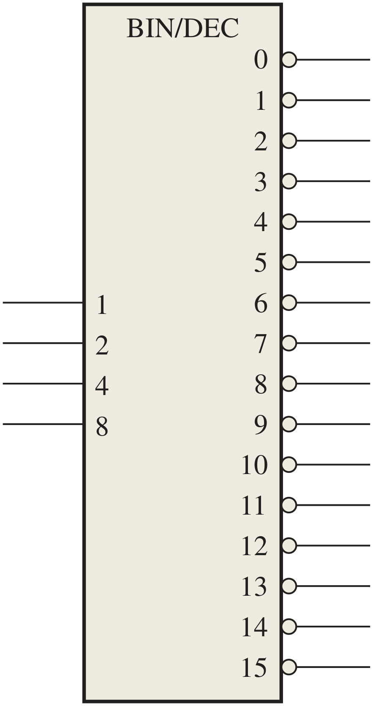
7.4.3 การประยุกต์ใช้งาน decoder
วงจร decoder นั้นสามารถนำไปประยุกต์ใช้กับงานได้หลากหลาย ยกตัวอย่างเช่นการใช้ในระบบการเลือก I/O เพื่อการใช้งานในระบบคอมพิวเตอร์ที่มีอุปกรณ์ I/O เชื่อมต่ออยู่เป็นจำนวนมาก ยกตัวอย่างในรูปที่ 7.16
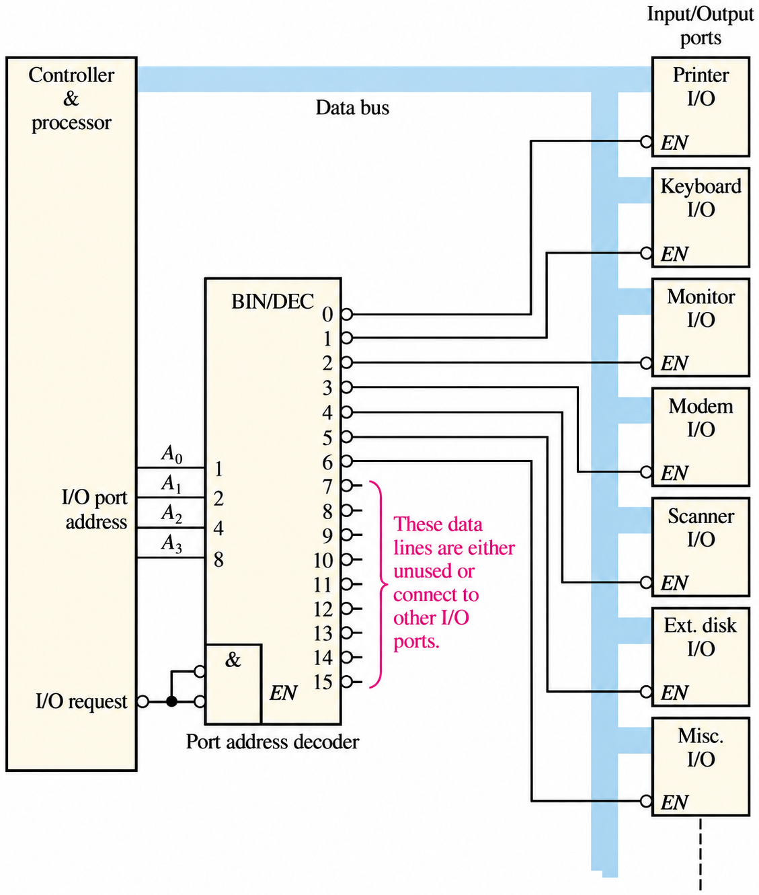
ในรูปนี้เป็นการแสดงให้เห็นระบบ I/O อย่างง่ายที่มีการใช้วงจร decoder เพื่อทำการระบุตำแหน่งพอร์ตของ I/O ที่ระบบคอมพิวเตอร์ต้องการติดต่อเพื่อรับหรือส่งข้อมูล ซึ่งในรูปนี้จะเห็นว่ามีอุปกรณ์ I/O ต่าง ๆ เช่น เครื่องพิมพ์ โมเด็ม สแกนเนอร์ ไดรฟ์ภายนอก (external drive) แป้นพิมพ์ จอภาพ และอุปกรณ์อื่น ๆ จะเห็นว่า decoder จะใช้ในการเลือกพอร์ต I/O ตามที่ได้ระบุเอาไว้โดยเครื่องคอมพิวเตอร์ว่าข้อมูลจะมีการส่งหรือการรับร่วมกับอุปกรณ์ภายนอกเหล่านี้
แต่ละพอร์ต I/O จะมีตำแหน่งพอร์ต (port address) ที่แตกต่างกันไปโดยไม่ซ้ำกัน เมื่อคอมพิวเตอร์ต้องการที่จะติดต่อสื่อสารกับอุปกรณ์ตัวใดก็จะต้องทำการส่ง address ที่ระบุอุปกรณ์นั้น ๆ โดยการส่งรหัสที่ถูกต้องออกไป ซึ่งจะถูกถอดรหัสด้วย decoder เพื่อที่เอาต์พุตของวงจร decoder จะส่งสัญญาณไป enable อุปกรณ์นั้น ๆ ได้อย่างถูกต้อง
7.4.4 BCD-to-Decimal Decoder
วงจรนี้จะทำการแปลงรหัส BCD (รหัส 8421) เพื่อให้กลายเป็นสัญญาณที่บ่งถึงตัวเลขฐานสิบที่สอดคล้องกันตัวใดตัวหนึ่งในสิบตัว วงจรนี้มักเรียกกันว่า 4-line-to-10-line decoder หรือ 1-of-10 decoder
วิธีในการสร้างวงจรนี้ไม่แตกต่างไปจาก 1-of-16 decoder ที่ได้กล่าวไปแล้วข้างต้น เพียงแต่จะมีวงจรสำหรับทำการ decode เหลือเพียง 10 ชุดเท่านั้น (เนื่องจากรหัส BCD นั้นมีเอาต์พุตที่เป็นตัวแทนตัวเลข 0 ถึง 9) ตารางที่ 7.5 แสดงรายการของรหัส BCD และ decoding function ซึ่งแต่ละฟังก์ชันจะใช้ NAND gate เพื่อที่จะได้ผลลัพธ์ของการถอดรหัสทางเอาต์พุตให้เป็น active-LOW หรือใช้ AND gate เพื่อให้เอาต์พุตเป็น active-HIGH
| Decimal digit | BCD code | Decoding function | |||
|---|---|---|---|---|---|
| A3 | A2 | A1 | A0 | ||
| 0 | 0 | 0 | 0 | 0 | A3A2A1A0 |
| 1 | 0 | 0 | 0 | 1 | A3A2A1A0 |
| 2 | 0 | 0 | 1 | 0 | A3A2A1A0 |
| 3 | 0 | 0 | 1 | 1 | A3A2A1A0 |
| 4 | 0 | 1 | 0 | 0 | A3A2A1A0 |
| 5 | 0 | 1 | 0 | 1 | A3A2A1A0 |
| 6 | 0 | 1 | 1 | 0 | A3A2A1A0 |
| 7 | 0 | 1 | 1 | 1 | A3A2A1A0 |
| 8 | 1 | 0 | 0 | 0 | A3A2A1A0 |
| 9 | 1 | 0 | 0 | 1 | A3A2A1A0 |
จากตารางข้างบนนี้จะเห็นว่า decoding function ของ BCD decoder เหมือนกันทุกประการกับของ 1-of-16 decoder สำหรับสัญลักษณ์ลอจิกของมันก็มีลักษณะเดียวกัน เพียงแต่มีจำนวนเอาต์พุตเพียง 10 ขาตามความต้องการในการใช้งานดังที่แสดงไว้ในรูปที่ 7.17
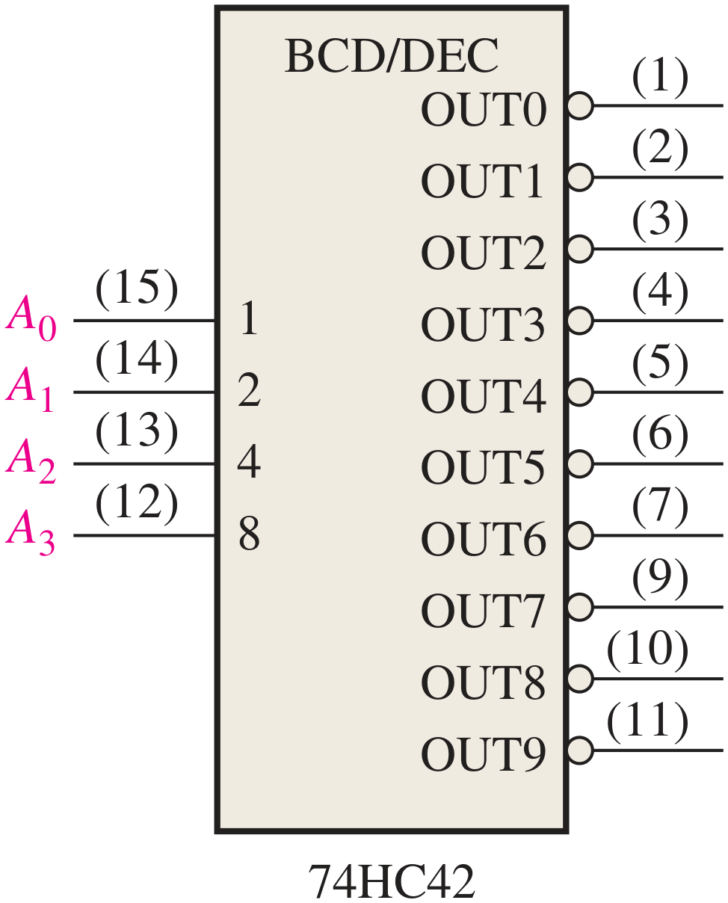
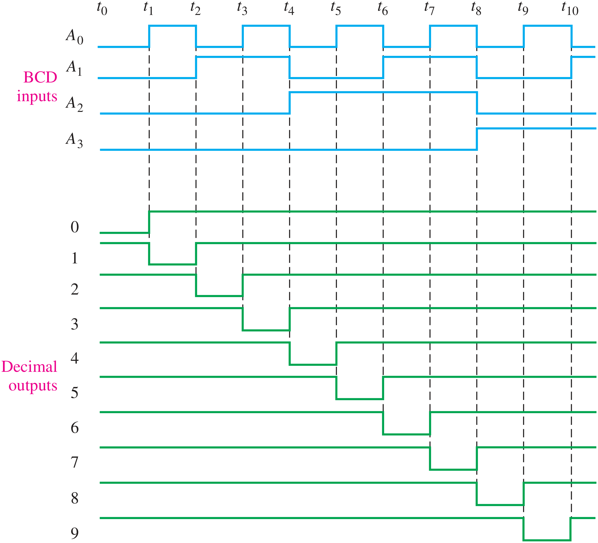
(ก)(ข)รูปที่ 7.18 เป็นการแสดงผังเวลาการทำงานของ BCD-to-decimal decoder ซึ่ง (ก) เป็นสัญญาณด้านอินพุตซึ่งป้อนด้วยรหัส BCD ขนาด 4 บิตที่เปลี่ยนแปลงไปตามเวลา ซึ่งในแต่ละช่วงเวลาที่รหัสมีการเปลี่ยนแปลง ผลลัพธ์ที่ได้จากเอาต์พุตที่เห็นในส่วน (ข) จะเป็นเลขฐานสิบที่สอดคล้องกัน
7.4.5 BCD-to-7-Segment Decoder
หน่วยแสดงผลที่มีการใช้กันมากในการแสดงตัวเลข เราเรียกว่า 7-segment LED ซึ่งประกอบด้วย LED เปล่งแสงจำนวน 7 ส่วน โดยแต่ละส่วนมีชื่อเรียกเป็นตัวอักษร a b c d e f และ g โดยเรียงตัวกันดังที่เห็นในรูปที่ 7.19 (ก) และในส่วน (ข) จะเห็นว่าแต่ละตัวเลขต้องมี segment ไหนที่เปล่งแสงและ segment ไหนที่ดับ
เมื่อเราต้องการแสดงผลตัวเลขให้ตรงกับรหัส BCD ที่ป้อนทางอินพุตนั้น จะเห็นว่าเราต้องการเอาต์พุตเพื่อส่งไปยัง 7-segment LED ที่มีความแตกต่างกันดังรูปที่ 7.19 (ข) ดังนั้นวงจร BCD-to-7-Segment decoder จะทำหน้าที่นี้ได้เป็นอย่างดี รูปที่ 7.20 แสดงสัญลักษณ์ลอจิกของวงจรนี้ ซึ่งจะเห็นว่าด้านเอาต์พุตจะมีอยู่ 7 ขาเพื่อนำไปต่อเข้ากับ 7-segment LED แต่ละตัวได้ สังเกตว่าขาเอาต์พุตจะเป็น active-LOW และจะมีการทำงานตามตารางที่ 7.6 (7-segment LED จะใช้ตั้งแต่เลข 0–9 เท่านั้นเนื่องจากเป็น BCD ที่ขาอินพุต)
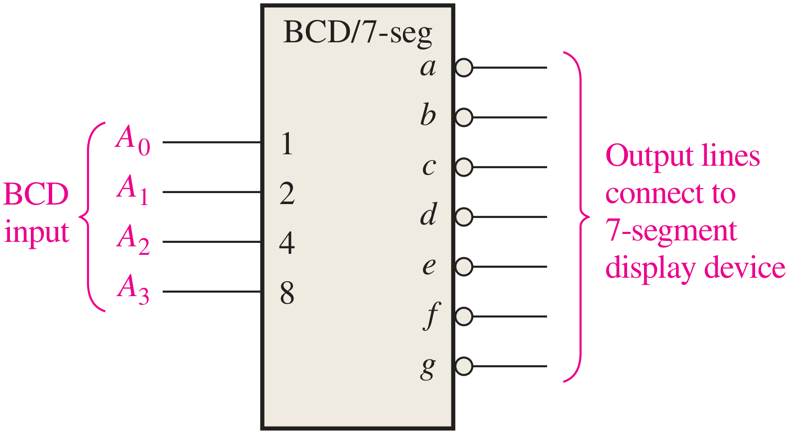
| Decimal digit | Inputs | Segment outputs | |||||||||
|---|---|---|---|---|---|---|---|---|---|---|---|
| D | C | B | A | a | b | c | d | e | f | g | |
| 0 | 0 | 0 | 0 | 0 | 1 | 1 | 1 | 1 | 1 | 1 | 0 |
| 1 | 0 | 0 | 0 | 1 | 0 | 1 | 1 | 0 | 0 | 0 | 0 |
| 2 | 0 | 0 | 1 | 0 | 1 | 1 | 0 | 1 | 1 | 0 | 1 |
| 3 | 0 | 0 | 1 | 1 | 1 | 1 | 1 | 1 | 0 | 0 | 1 |
| 4 | 0 | 1 | 0 | 0 | 0 | 1 | 1 | 0 | 0 | 1 | 1 |
| 5 | 0 | 1 | 0 | 1 | 1 | 0 | 1 | 1 | 0 | 1 | 1 |
| 6 | 0 | 1 | 1 | 0 | 1 | 0 | 1 | 1 | 1 | 1 | 1 |
| 7 | 0 | 1 | 1 | 1 | 1 | 1 | 1 | 0 | 0 | 0 | 0 |
| 8 | 1 | 0 | 0 | 0 | 1 | 1 | 1 | 1 | 1 | 1 | 1 |
| 9 | 1 | 0 | 0 | 1 | 1 | 1 | 1 | 1 | 0 | 1 | 1 |
| 10 | 1 | 0 | 1 | 0 | X | X | X | X | X | X | X |
| 11 | 1 | 0 | 1 | 1 | X | X | X | X | X | X | X |
| 12 | 1 | 1 | 0 | 0 | X | X | X | X | X | X | X |
| 13 | 1 | 1 | 0 | 1 | X | X | X | X | X | X | X |
| 14 | 1 | 1 | 1 | 0 | X | X | X | X | X | X | X |
| 15 | 1 | 1 | 1 | 1 | X | X | X | X | X | X | X |
7.5 วงจรเข้ารหัส (Encoder)
วงจรนี้เป็นวงจรที่มีหน้าที่กลับด้านกับวงจรถอดรหัส ซึ่งจะต้องมีขาอินพุตที่รับสัญญาณที่เป็นตัวแทนตัวเลขใดตัวเลขหนึ่ง แล้วทำหน้าที่ในการแปลงให้เป็นชุดรหัสทางเอาต์พุตที่ต้องการ ซึ่งอาจจะเป็น BCD หรือเป็นค่าไบนารี
7.5.1 วงจร Decimal-to-BCD Encoder
วงจร encoder นี้มีขาอินพุต 10 ขา แต่ละขาเป็นตัวแทนของตัวเลขฐานสิบแต่ละตัว (0–9) โดยจะมีเอาต์พุตจำนวน 4 ขาเพื่อส่งสัญญาณเป็นรหัส BCD ที่สอดคล้องกับสัญญาณอินพุตที่ถูกป้อนเข้ามา ในรูปที่ 7.21 เป็นสัญลักษณ์ลอจิกของวงจรเข้ารหัสที่มีชื่อหนึ่งว่า 10-line-to-4-line encoder โดยมีการทำงานตามตารางที่ 7.7
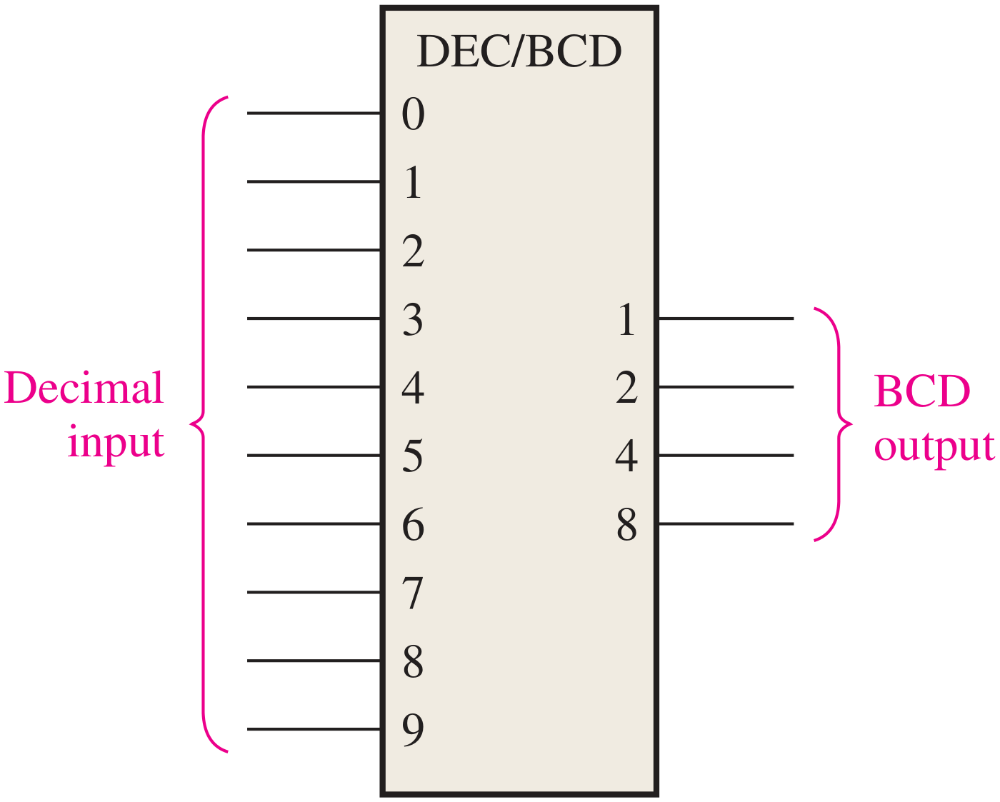
| Decimal digit | BCD code | |||
|---|---|---|---|---|
| A3 | A2 | A1 | A0 | |
| 0 | 0 | 0 | 0 | 0 |
| 1 | 0 | 0 | 0 | 1 |
| 2 | 0 | 0 | 1 | 0 |
| 3 | 0 | 0 | 1 | 1 |
| 4 | 0 | 1 | 0 | 0 |
| 5 | 0 | 1 | 0 | 1 |
| 6 | 0 | 1 | 1 | 0 |
| 7 | 0 | 1 | 1 | 1 |
| 8 | 1 | 0 | 0 | 0 |
| 9 | 1 | 0 | 0 | 1 |
จากตารางที่ 7.7 เราสามารถหาความสัมพันธ์ระหว่างแต่ละบิตของรหัส BCD กับชุดตัวเลขฐานสิบเพื่อนำมาวิเคราะห์ในการออกแบบสร้างวงจรลอจิก ยกตัวอย่างเช่น เลข 8 กับ 9 นั้น ตัวหนึ่งตัวใดจะเป็นกรณีที่ทำให้เอาต์พุต A3 มีค่าเป็น 1 ดังนั้น เราสามารถนำสัญญาณอินพุตสองตัวนี้มา OR กัน ซึ่งจะได้นิพจน์เป็น
สำหรับเอาต์พุต A2 จะมีค่าเป็น 1 ในกรณีของตัวเลขอินพุตเป็น 4 5 6 และ 7 ดังนั้นเราจะได้
เอาต์พุต A1 จะมีค่าเป็น 1 ในกรณีของตัวเลขอินพุตเป็น 2 3 6 และ 7 ดังนั้นเราจะได้
และเอาต์พุต A0 จะมีค่าเป็น 1 ในกรณีของตัวเลขอินพุตเป็น 1 3 5 7 และ 9 ดังนั้นเราจะได้
จากการวิเคราะห์ดังกล่าวนี้ เราสามารถนำมาเขียนเป็นวงจรสำหรับการเข้ารหัสเลขฐานสิบให้เป็นรหัส BCD ได้ด้วยการนำ OR gate ที่มีจำนวนขาอินพุตที่สอดคล้องกับแต่ละนิพจน์เพื่อสร้างสัญญาณเอาต์พุตในแต่ละบิตของ BCD ได้ดังรูปที่ 7.22 ดังต่อไปนี้
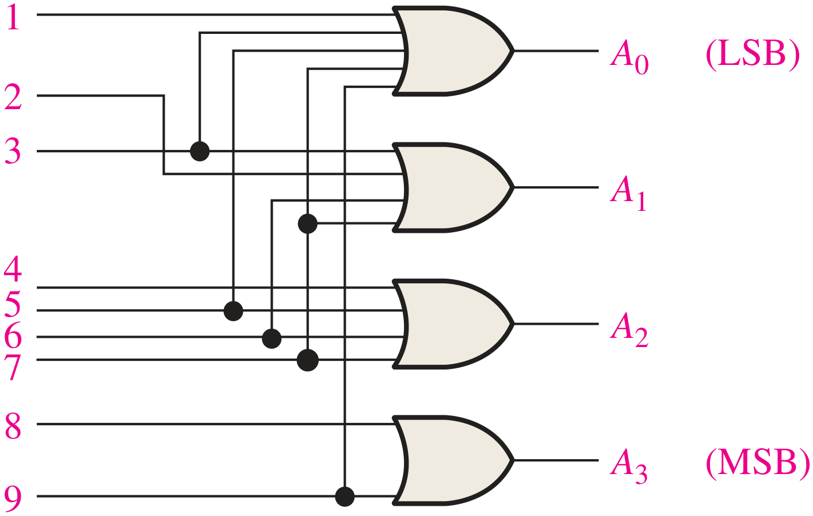
ในรูปเราจะเห็นว่าไม่มีขาสัญญาณอินพุต 0 อยู่ในวงจร เพราะเอาต์พุตจะเป็น 0 ทั้งหมดเมื่อสัญญาณจากขาสัญญาณอินพุตที่ทดแทนตัวเลข 1–9 ทั้งหมดมีค่าเป็น LOW (0) พร้อมกัน
วงจร encoder ลักษณะนี้สามารถนำไปประยุกต์ใช้ในงานต่าง ๆ เช่นที่เห็นในรูปที่ 7.23 จะเป็นการนำไปใช้กับแป้นตัวเลข (numeric keypad) ที่มีวงจรสำหรับรับการกดปุ่มตัวเลข ซึ่งจะเป็นอินพุตที่จะส่งไปยังตัว encoder ที่จะทำการเข้ารหัสให้ได้เอาต์พุตออกมาเป็นรหัส BCD ซึ่งในรูปจะเป็นวงจร encoder ที่ทั้งอินพุตและเอาต์พุตจะมีลักษณะ active-LOW ทั้งสองด้าน
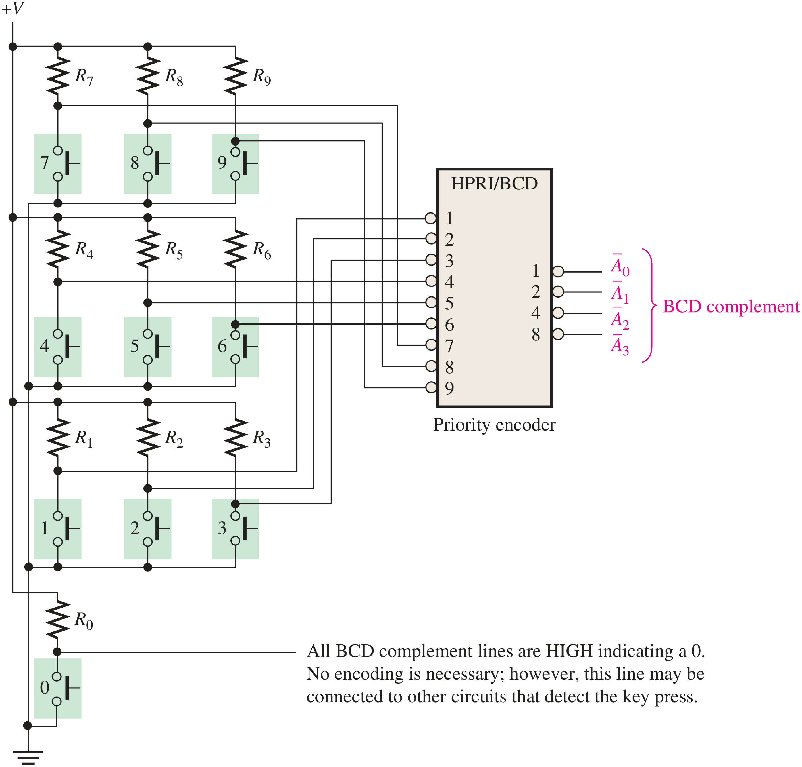
7.6 วงจรแปลงรหัส (Code Converter)
ในหัวข้อนี้จะเป็นการเรียนรู้การสร้างวงจรลอจิกคอมไบเนชันที่สามารถทำการแปลงจากรหัสหนึ่งไปเป็นอีกรหัสหนึ่งได้
7.6.1 วงจรแปลง Binary-to-Gray
จากวิธีการแปลง binary ให้เป็นรหัส Gray ที่ได้อธิบายไว้ในบทที่ 2 แล้วนั้น เราสามารถนำเอา XOR gate มาทำปฏิบัติการได้โดยการสร้างวงจร binary-to-Gray ขนาด 4 บิต ดังรูปที่ 7.24
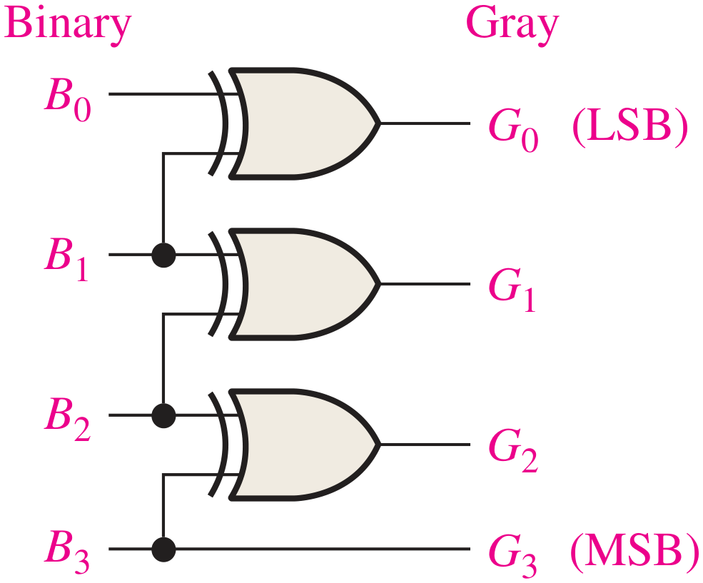
7.6.2 วงจรแปลง Gray-to-Binary
สำหรับวงจรแปลงรหัสเกรย์ให้เป็นไบนารีจะใช้ XOR gate เพื่อสร้างวงจรได้ดังรูปที่ 7.25
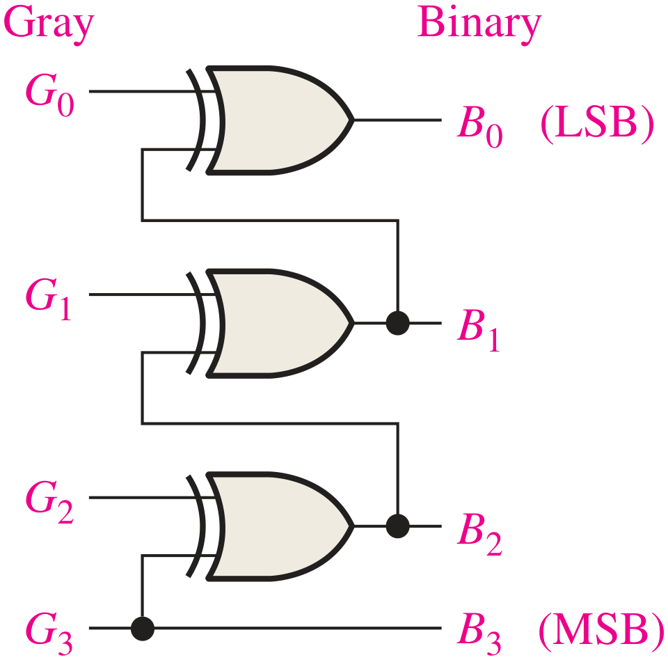
- จงทำการแปลงเลขไบนารี 0101 ให้เป็นรหัสเกรย์ด้วยการใช้ XOR gate
- จงทำการแปลงรหัสเกรย์ 1011 ให้เป็นไบนารีด้วยการใช้ XOR gate
แสดงวิธีทำ
(I)จากวงจรแปลงไบนารีให้เป็นรหัสเกรย์ จะทำให้ 01012 เป็น 0111 ในรหัสเกรย์ดังรูปต่อไปนี้
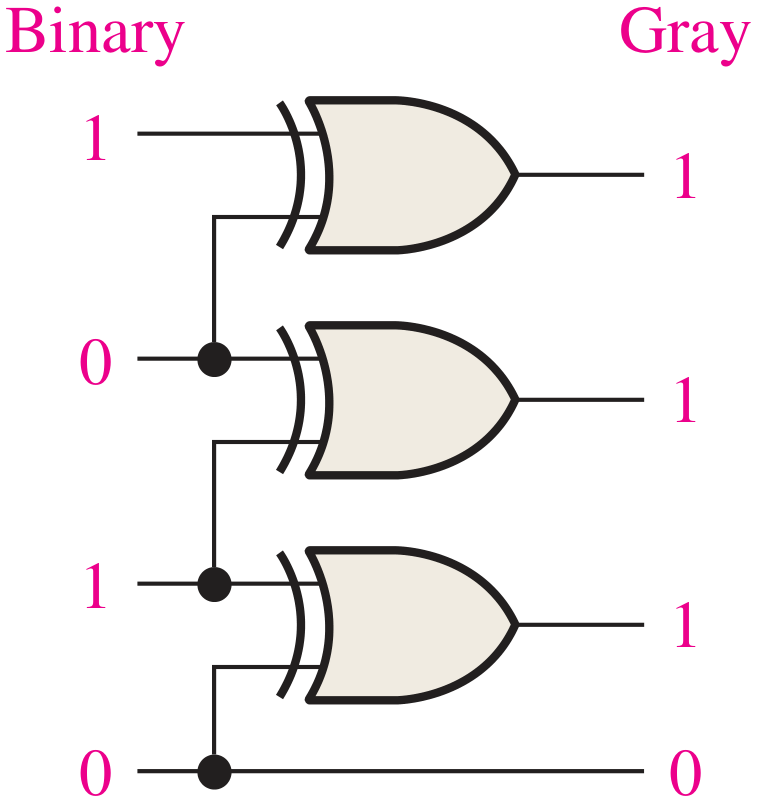
(II)จากวงจรแปลงรหัสเกรย์ให้เป็นไบนารี จะทำให้ 1011 เป็น 11012 ดังรูปต่อไปนี้
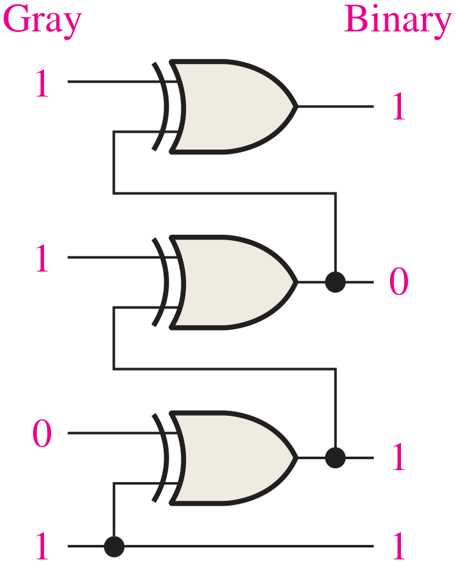
7.7 วงจร Multiplexer (Data Selector)
Multiplexer เป็นอุปกรณ์ในการทำให้ข้อมูลดิจิทัลที่มีแหล่งข้อมูลจากหลาย ๆ แหล่ง สามารถส่งไปบนสายนำสัญญาณเส้นเดียวเพื่อให้ไปถึงจุดมุ่งหมายเดียวกันได้ ซึ่ง multiplexer พื้นฐานจะมีสัญญาณข้อมูลขาเข้าจำนวนหลายสัญญาณ แต่จะมีสัญญาณขาออกเพียงสัญญาณเดียว และที่สำคัญจะต้องมีสัญญาณอินพุตอีกชุดหนึ่งที่เรียกว่า data-select เพื่อเป็นการเลือกสัญญาณขาเข้าตัวหนึ่ง ๆ ในเวลานั้นเพื่อทำการส่งสัญญาณที่ถูกเลือกนั้นให้ส่งไปยังสัญญาณขาออก ดังนั้นวงจร multiplexer อาจเรียกว่าเป็นวงจร data selector นั่นเอง
สัญลักษณ์ลอจิกสำหรับ multiplexer (MUX) ขนาด 4 บิตแสดงไว้ในรูปที่ 7.26 พิจารณาดูว่าวงจรนี้มีขา data-select อยู่ 2 ขา (S0 กับ S1) เพื่อทำการเลือกสัญญาณอินพุตจากบิตใดบิตหนึ่งใน 4 บิต (D0–D3) เพื่อส่งออกไปยังเอาต์พุต Y ได้
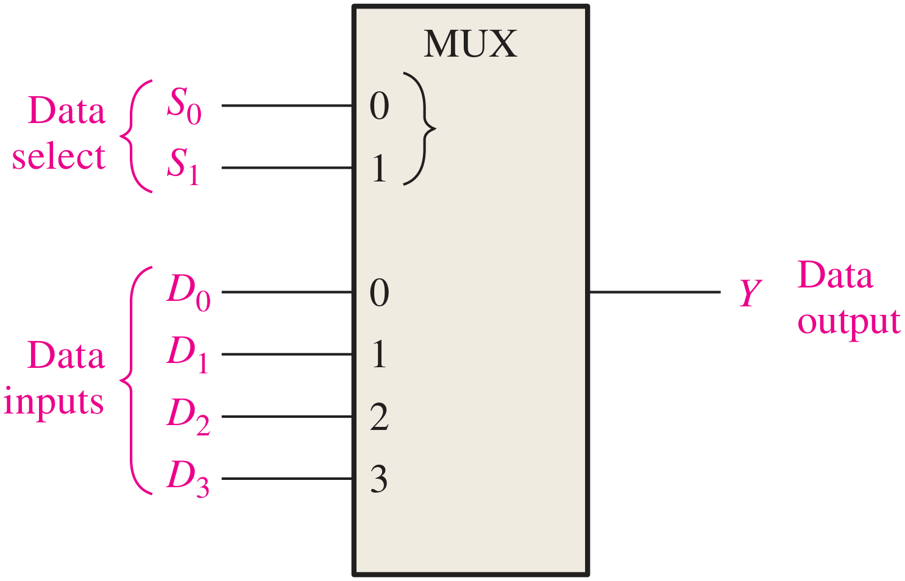
เมื่อค่าไบนารีของสัญญาณ data select เป็น 0 (S1=0 กับ S0=0) จะเป็นการส่งค่าจากขา D0 ให้ออกไปยังเอาต์พุต แต่เมื่อค่าไบนารีของสัญญาณ data select เป็น 1 (S1=0 กับ S0=1) จะเป็นการส่งค่าจากขา D1 ให้ออกไปยังเอาต์พุต เมื่อค่าไบนารีของสัญญาณ data select เป็น 2 (S1=1 กับ S0=0) จะเป็นการส่งค่าจากขา D2 ให้ออกไปยังเอาต์พุต และสุดท้ายเมื่อค่าไบนารีของสัญญาณ data select เป็น 3 (S1=1 กับ S0=1) จะเป็นการส่งค่าจากขา D3 ให้ออกไปยังเอาต์พุต ซึ่งจะสรุปได้ดังตารางที่ 7.8
| Data-select inputs | Input selected | |
|---|---|---|
| S1 | S0 | |
| 0 | 0 | D0 |
| 0 | 1 | D1 |
| 1 | 0 | D2 |
| 1 | 1 | D3 |
เราสามารถสร้างนิพจน์ที่เป็นตัวแทนการปฏิบัติงานของ MUX ด้วยการพิจารณาดังต่อไปนี้
- สัญญาณเอาต์พุตจะเท่ากับสัญญาณของ D0 เฉพาะเมื่อ S1=0 และ S0=0 จะได้ว่า Y = D0S1S0
- สัญญาณเอาต์พุตจะเท่ากับสัญญาณของ D1 เฉพาะเมื่อ S1=0 และ S0=1 จะได้ว่า Y = D1S1S0
- สัญญาณเอาต์พุตจะเท่ากับสัญญาณของ D2 เฉพาะเมื่อ S1=1 และ S0=0 จะได้ว่า Y = D2S1S0
- สัญญาณเอาต์พุตจะเท่ากับสัญญาณของ D3 เฉพาะเมื่อ S1=1 และ S0=1 จะได้ว่า Y = D3S1S0
เมื่อนำแต่ละพจน์ที่ได้ไปทำการ OR กันจะทำให้ได้นิพจน์ที่เสร็จแล้วดังต่อไปนี้
จากนิพจน์ดังกล่าวนี้จะต้องใช้ AND gate ขนาด 3 อินพุตจำนวน 4 ตัว OR gate ขนาด 4 อินพุตจำนวน 1 ตัว และอินเวอร์เตอร์ 2 ตัวสำหรับทำการ complement สัญญาณ S1 และ S0 ซึ่งจะสามารถนำมาต่อกันได้ดังรูปที่ 7.27
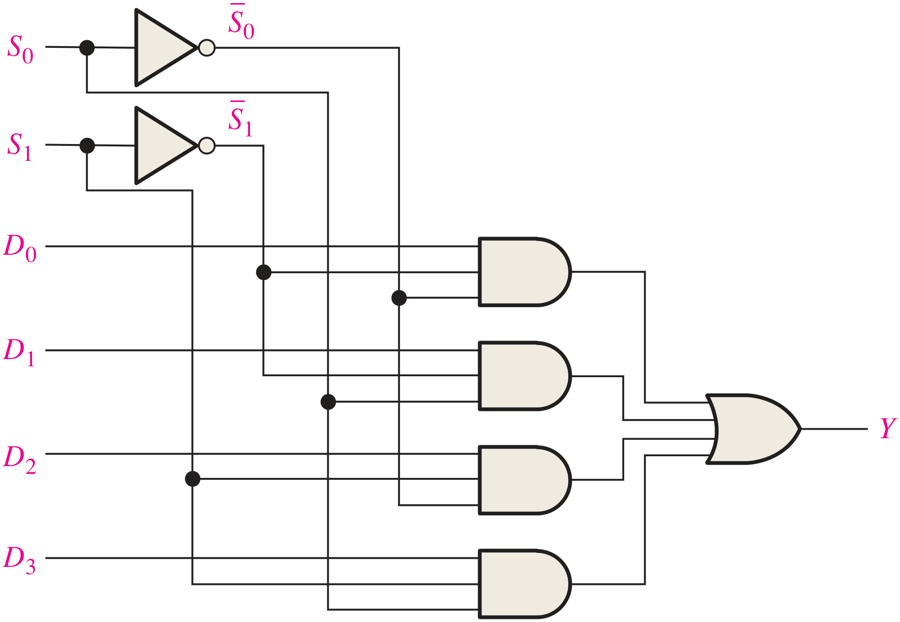
ถ้าเราป้อนสัญญาณอินพุตเข้าไปยังขาข้อมูลเข้าเป็นพัลส์ที่มีการเปลี่ยนแปลงของรูปคลื่นดังที่เห็นในรูปที่ 7.28 ในส่วนของ D0–D3 และกำหนดให้มีการเปลี่ยนแปลงของขา data select (S0 กับ S1) แล้ว เราจะได้รูปคลื่นของเอาต์พุต (Y) ดังที่ได้เห็นในภาพดังกล่าว
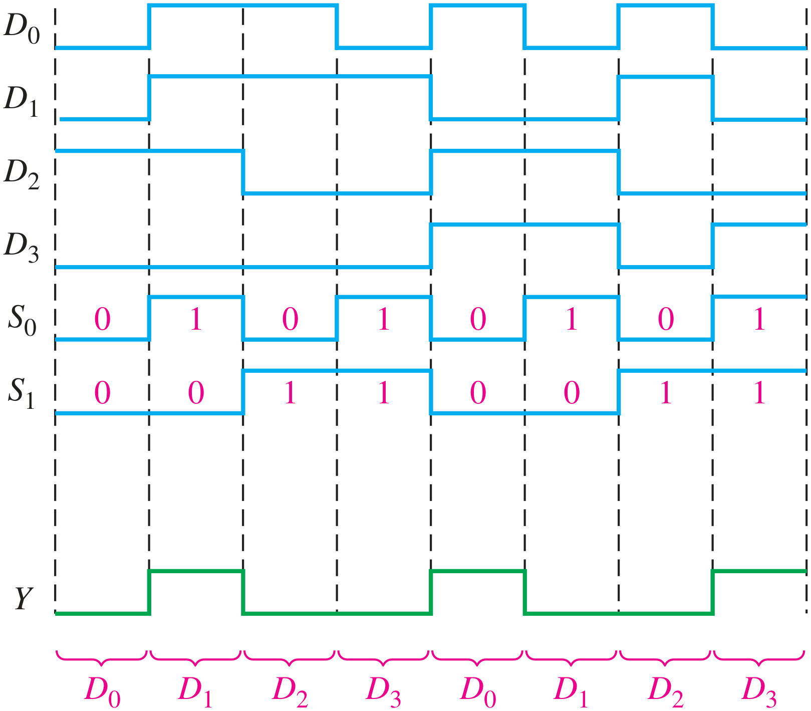
7.8 วงจร Demultiplexer
การทำงานของ demultiplexer (DEMUX) นั้นเป็นฟังก์ชันตรงกันข้ามของ MUX โดยมันจะรับข้อมูลดิจิทัลจากขาอินพุตขาเดียว และจะทำการกระจายสัญญาณนี้ออกไปทางขาเอาต์พุตที่มีอยู่ได้ตามที่ต้องการ ซึ่งเราอาจเรียก demultiplexer อีกชื่อหนึ่งว่า data distributor
รูปที่ 7.29 แสดงวงจรการทำงานของ 1-line-to-4-line DEMUX ซึ่งจะเห็นว่าขา data input จะเชื่อมเข้ากับ AND gate ทุกตัวที่ปรากฏในวงจร ส่วนขา data select ทั้งสองขานั้นจะทำงานร่วมกันเพื่อเป็นการ enable เกท AND ครั้งละหนึ่งเกท ซึ่งจะเป็นการส่งข้อมูลผ่านจากขา data input ไปยังขา data output ที่ถูกเลือกจากขา select line
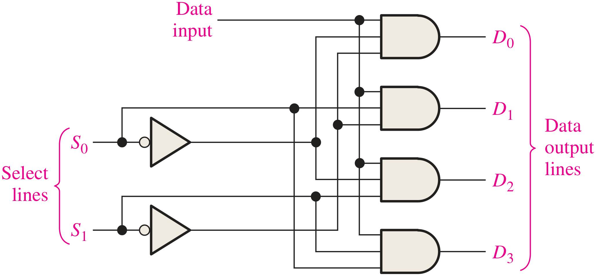
สรุปท้ายบท
- Half-adder บวกบิต 2 บิตได้ Σ = A ⊕ B และ Cout = AB ส่วน full-adder มี input carry เพิ่ม ได้ Σ = (A ⊕ B) ⊕ Cin และ Cout = AB + (A ⊕ B)Cin และสร้างได้จาก half-adder 2 ตัวกับ OR gate
- Parallel binary adder ต่อ full-adder หลายตัวโดยส่ง Cout ของบิตต่ำไปยัง Cin ของบิตสูง และขยายเป็น 8 หรือ 16 บิตได้ด้วยการต่อ adder 4 บิตแบบ cascade
- Comparator ตรวจความเท่ากันด้วย XOR/XNOR ร่วมกับ AND gate และตรวจความไม่เท่ากัน (A > B, A < B) โดยเริ่มพิจารณาจากบิตที่มีนัยสำคัญสูงสุด
- Decoder มีอินพุต n ขาและเอาต์พุต 2n ขา เช่น 1-of-16, BCD-to-decimal และ BCD-to-7-segment decoder ซึ่งใช้เลือกพอร์ต I/O หรือขับหน่วยแสดงผลตัวเลข
- Encoder ทำหน้าที่ตรงข้ามกับ decoder เช่น decimal-to-BCD encoder ที่สร้างจาก OR gate และใช้กับแป้นกดตัวเลข
- วงจรแปลงรหัส Binary-to-Gray และ Gray-to-Binary ขนาด 4 บิตสร้างได้ด้วย XOR gate
- MUX (data selector) ใช้ขา data-select เลือกอินพุตหนึ่งขาส่งออกเอาต์พุตเดียว ส่วน DEMUX (data distributor) กระจายอินพุตเดียวไปยังเอาต์พุตที่ถูกเลือก
แบบทดสอบท้ายบท
เลือกคำตอบ ระบบจะเฉลยพร้อมคำอธิบายทันที (ไม่มีการบันทึกคะแนน ใช้สำหรับทบทวนด้วยตนเอง)
ปฏิบัติการสัปดาห์ที่ 9–10 · วงจรบวก วงจรถอดรหัส multiplexer และ 7-segment
ตามแผนการสอนใน มคอ.3 บทนี้มีปฏิบัติการ 2 ครั้ง ใช้ไอซี MSI ตระกูล 74 ที่ทำหน้าที่ตามหัวข้อในบท — ทุกข้อให้เปรียบเทียบผลที่วัดได้กับตารางค่าความจริงในบทเรียนและแบบจำลองบนเว็บ
📋 ใบงานปฏิบัติการที่ 6 (สัปดาห์ที่ 9) · วงจรบวกและวงจรถอดรหัส
- Half-adder และ full-adder: ต่อ half-adder ด้วย 7486 + 7408 แล้วต่อ full-adder จาก half-adder 2 ตัว + 7432 (รูปที่ 7.6) ทดสอบครบ 8 กรณีเทียบกับตารางที่ 7.2
- Parallel adder 4 บิต: ใช้ 74LS283 บวก 1100 + 1100 (ตัวอย่างที่ 7.3) และอีก 3 คู่ที่เลือกเอง บันทึก Σ4–Σ1 และ C4 · ตั้ง C0 = 1 แล้วสังเกตผล
- Comparator: ต่อวงจรตรวจความเท่ากัน 2 บิตด้วย XOR + inverter + AND (รูปที่ 7.12) แล้วทดสอบกับ 7485 (4 บิต) ที่ให้เอาต์พุต A > B, A = B, A < B
- Decoder: ต่อวงจรถอดรหัส 1011 (ตัวอย่างที่ 7.5) ด้วยเกทพื้นฐาน แล้วใช้ 74LS138 (3-line-to-8-line, active-LOW) ขับ LED 8 ดวง — สังเกตว่า LED ต้องต่ออย่างไรเมื่อเอาต์พุตเป็น active-LOW
ส่ง: ผังวงจรพร้อมเบอร์ไอซีและขา · ตารางผลการทดลอง · คำตอบคำถามท้ายการทดลอง (ประเมินในหมวดแบบฝึกหัดและรายงานผลการทดลอง 20%)
📋 ใบงานปฏิบัติการที่ 7 (สัปดาห์ที่ 10) · Multiplexer และ 7-segment
- BCD-to-7-segment: ต่อ 74LS47 (active-LOW) กับ 7-segment แบบ common anode ผ่านตัวต้านทานจำกัดกระแส ป้อน BCD 0000–1001 ด้วยสวิตช์ เทียบ segment ที่สว่างกับตารางที่ 7.6 แล้วทดลองป้อน 1010–1111
- Encoder: ใช้ 74LS147 (priority encoder 10-to-4) รับค่าจากสวิตช์ 9 ตัว ต่อเอาต์พุตผ่าน inverter เข้า 74LS47 ให้แสดงเลขที่กด — กดสองปุ่มพร้อมกันแล้วสังเกตผล
- Multiplexer: ใช้ 74LS153 (dual 1-of-4 MUX) เลือกสัญญาณ 4 แหล่ง (สวิตช์ 2 ตัว · นาฬิกา 1 kHz · นาฬิกา 10 Hz) ด้วย S1S0 ดูเอาต์พุตบนออสซิลโลสโคปเทียบกับรูปที่ 7.28
- Demultiplexer: ใช้ 74LS138 เป็น DEMUX 1-to-8 (ป้อนข้อมูลที่ขา enable) ส่งสัญญาณนาฬิกา 10 Hz ไปยัง LED ที่เลือก
- ความท้าทาย: ใช้ MUX 8-to-1 (74LS151) สร้างฟังก์ชัน 3 ตัวแปรจากตัวอย่างที่ 6.1 (X = AB + AC + BC) โดยไม่ใช้เกทอื่น
ตรวจคำตอบได้ด้วยแบบจำลองในหัวข้อ 7.4.5 (7-segment), 7.5 (encoder), 7.7–7.8 (MUX/DEMUX)
👥 โครงงานกลุ่ม · ส่งข้อเสนอโครงงาน (สัปดาห์ที่ 9 · CLO11)
ข้อเสนอ 1–2 หน้า: ชื่อโครงงาน · เป้าหมาย · อินพุต/เอาต์พุตของระบบ · block diagram (ใช้วงจรในบทนี้ได้ เช่น decoder + 7-segment, comparator, MUX) · รายการไอซี · แผนงานรายสัปดาห์ และผู้รับผิดชอบงานย่อยแต่ละส่วน — ทุกคนในกลุ่มต้องอธิบายเป้าหมายได้ตรงกัน